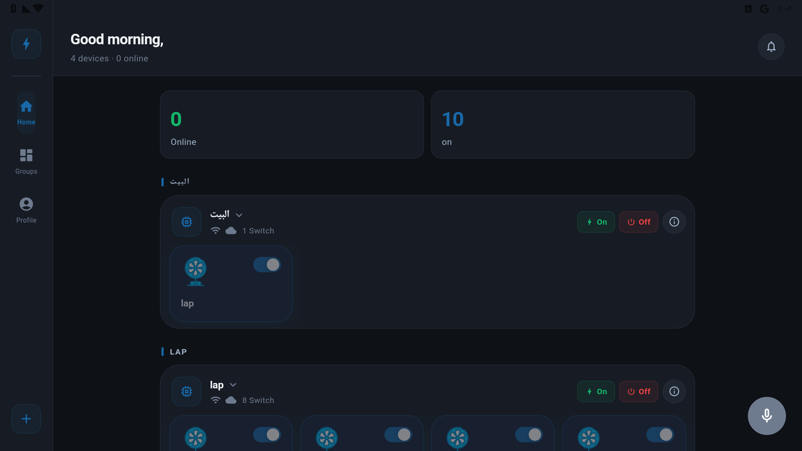
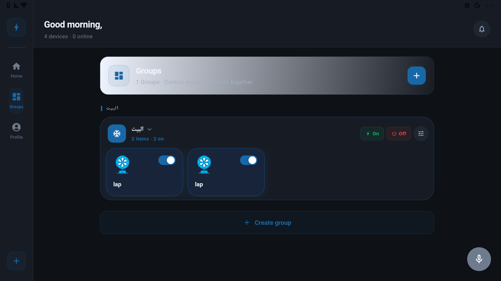
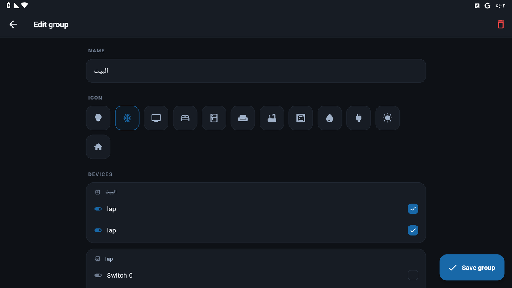

دليل كوش سمارت
كل اللي محتاج تعرفه لإعداد بيتك الذكي — خطوة بخطوة، وبدون أي تعقيد.
1 تثبيت التطبيق وعمل حساب
- نزّل تطبيق كوش سمارت من Google Play (أندرويد) أو App Store (آيفون).
- افتح التطبيق واضغط إنشاء حساب.
- اكتب إيميلك واختار باسورد، وأكّد الحساب من الإيميل.
- سجّل دخولك — وخلاص، حسابك جاهز.
2 إضافة أول جهاز (التوصيل بالواي فاي)
الوحدة أول مرة بتطلع شبكة واي فاي خاصة بيها للإعداد، والتطبيق بيمشّيك خطوة خطوة.
- تأكد إن الوحدة شغّالة وإن باسورد الواي فاي بتاع البيت معاك.
- من الشاشة الرئيسية اضغط ➕ إضافة جهاز.
- التطبيق هيلاقي الوحدة الجديدة — اختارها.
- اختار شبكة الواي فاي (2.4 جيجا) واكتب الباسورد.
- اضغط حفظ / توصيل — الوحدة هتعيد التشغيل وتتصل.
- بعد ثواني هتلاقي الوحدة وكل مفاتيحها ظهرت في قائمة أجهزتك. ✅
3 الإعدادات العامة (الكونفيجريشن)
من صفحة الإعدادات / Configuration للوحدة، تقدر تظبط طريقة عمل المفاتيح حسب تركيبتك الكهربائية. افتح تفاصيل الوحدة ← الإعدادات العامة.
| الإعداد | بيعمل إيه |
|---|---|
| وضع المفتاح | عادي / مفتاح ثلاثي (Three-way) / ضغطة (Push) |
| توصيل المفتاح | Pull-up أو Pull-down حسب التوصيلة |
| الريليه | Active-High أو Active-Low |
| اسم نقطة الواي فاي (AP) | اسم الشبكة اللي الوحدة بتطلعها وقت الإعداد |
| زر الكونفيج | توصيلة زر الإعداد على الوحدة |
4 التحكم في الأجهزة

الشاشة الرئيسية — كل أجهزتك وحالتها وأزرار التحكم.
| الإجراء | الطريقة |
|---|---|
| تشغيل/إطفاء | اضغط على زر الجهاز |
| خفت الإضاءة (Dimmer) | حرّك الشريط لأعلى/لأسفل |
| سرعة المروحة | حرّك شريط السرعة |
| الألوان (RGB) | اختار اللون من دائرة الألوان |
| الستائر / الشتر | أزرار فتح / قفل / إيقاف |
| التفاصيل الكاملة | اضغط مطوّلًا على الجهاز |
5 تسمية الأجهزة
- اضغط مطوّلًا على الجهاز ← إعادة تسمية.
- اكتب اسم واضح زي «نور الصالة».
- احفظ.
6 المجموعات
اجمع كذا جهاز في مجموعة وتحكّم فيهم كلهم بضغطة واحدة (مثلًا «إضاءة الدور الأول»).

صفحة المجموعات

إنشاء وتعديل مجموعة
- افتح صفحة المجموعات ← ➕ مجموعة جديدة.
- اكتب اسم المجموعة واختار الأجهزة اللي فيها.
- احفظ — دلوقتي تقدر تشغّل/تطفّي المجموعة كلها مرة واحدة.
7 المؤقتات والإطفاء التلقائي
عدّاد تنازلي (مرة واحدة)
- افتح تفاصيل الجهاز ← مؤقّت.
- اختار المدة (مثلًا يطفّي بعد 30 دقيقة).
- تأكيد — والمؤقت الفعّال بيظهر جوه صفحة الجهاز.
إطفاء تلقائي دائم
«كل ما يشتغل، يطفّي بعد كذا ثانية» — مفيدة لسخان المياه أو إضاءة الحمام.
- افتح تفاصيل الجهاز ← إطفاء تلقائي.
- حدّد المدة بالثواني واحفظ — هيشتغل كل مرة الجهاز يتشغّل.
8 الجدولة بالوقت
خلّي الأجهزة تشتغل/تطفّي في مواعيد ثابتة (مثلًا النور يولّع 6 مساءً ويطفّي 11).
- افتح صفحة الجدولة ← ➕ موعد جديد.
- اختار الجهاز، الوقت، والأيام.
- اختار الإجراء (تشغيل / إطفاء) واحفظ.
9 الأتمتة (لما يحصل كذا اعمل كذا)
اربط الحسّاسات بالأفعال تلقائيًا — من غير ما تلمس موبايلك.
- افتح صفحة الأتمتة ← ➕ أتمتة جديدة.
- اختار الشرط (مثلًا: الحرارة أكبر من 30، أو حسّاس الباب اتفتح).
- اختار النتيجة: تشغيل/إطفاء جهاز، و/أو إرسال إشعار.
- احفظ — الأتمتة بتشتغل لوحدها.
10 الحسّاسات والإشعارات
كوش سمارت بيدعم حسّاسات الحرارة والرطوبة (DHT)، الأبواب/الحركة، والحسّاسات اللاسلكية 433MHz.
- الحسّاس بيظهر تلقائيًا مع قراءته في التطبيق.
- عشان توصلك إشعارات: افتح الحسّاس ← فعّل إرسال إشعار عند حدث (أو من صفحة الأتمتة).
- تأكد إن إشعارات التطبيق مفعّلة من إعدادات الموبايل.
11 الريموت 433MHz و IR (أشعة)
- افتح صفحة الريموتات.
- اضغط تعلّم زر جديد، واختار الجهاز اللي الزر هيتحكم فيه (وإجراء: تشغيل/إطفاء/تبديل، أو إشعار للحسّاسات).
- اضغط الزر على الريموت — الوحدة هتتعلّم الكود.
- خلاص، بقى الزر يتحكم في الجهاز اللي اخترته.
? حل المشاكل
الجهاز ظاهر «غير متصل»؟
تأكد إن الكهربا واصلة والواي فاي شغّال، والإشارة كويسة مكان الجهاز. جرّب تطفّي الراوتر وتشغّله واستنّى دقيقة.
جهاز جديد مش ظاهر؟
تأكد إنك خلّصت خطوات الإضافة وإن الوحدة اتصلت بالواي فاي. اقفل التطبيق وافتحه تاني.
المفاتيح الخارجية مش شغّالة صح؟
من الإعدادات العامة غيّر وضع المفتاح أو التوصيل (Pull-up/Pull-down)، ولو الريليه بالعكس غيّر Active-High/Low.
الجهاز بيستجيب ببطء؟
وانت في البيت التحكم بيبقى محلي وفوري. لو بطيء، تأكد إن موبايلك على نفس شبكة الواي فاي بتاعت الأجهزة.
نسيت الباسورد؟
من شاشة الدخول اضغط «نسيت كلمة السر» واتبع الخطوات على إيميلك.